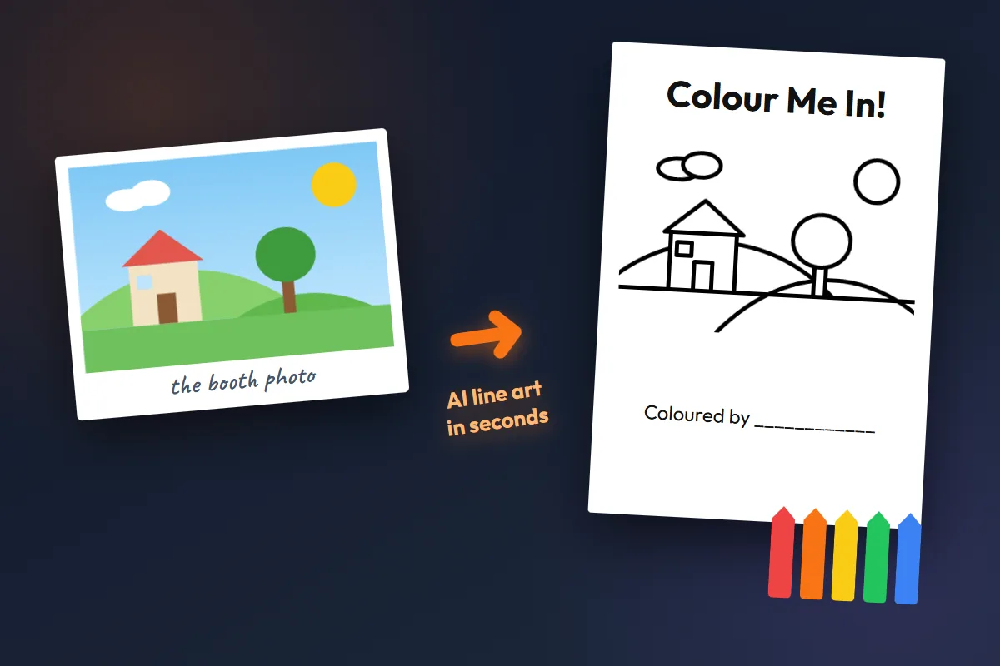
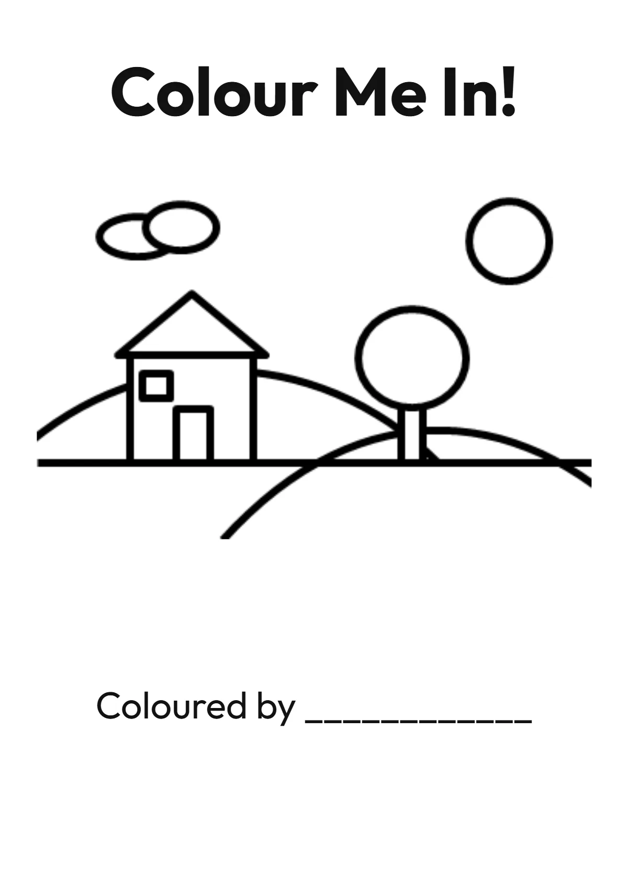

BoothLedger’s colouring in photo booth turns each guest photo into clean black-and-white line art on an A4 “Colour Me In!” page — faces stay recognisable, the page prints on plain paper in seconds, and the crayons do the rest. A take-home activity and a keepsake in one, and the original photo is always kept too.

A colouring in photo booth (or coloring book photo booth) turns guests into the star of their own colouring page. They pose, tap one button, and seconds later a printed A4 page — their photo redrawn as crisp, colourable line art — is on the table with a box of crayons. BoothLedger handles every step: capture, AI line art, the Colour Me In page template, plain-paper A4 print and digital share, all from one Windows app.
Guests pose as normal — a Canon DSLR or webcam takes the shot on the touchscreen booth. Solo kids, families or whole groups: the conversion keeps everyone in the picture.
The “Colour Me In!” button sends the photo through BoothLedger’s AI, which redraws it as thick, connected black outlines on white — no shading, no grey — while keeping every face recognisable. About 15–30 seconds.
The finished “Colour Me In!” page prints on plain A4 paper — crayon-ready, unlike glossy photo stock. Guests also get a digital copy by SMS, email or QR to reprint at home.
The colouring page isn’t a fixed layout — it’s a live A4 template in BoothLedger’s editor. Brand it once for the event and every guest’s page comes out matching.

“Colour Me In!” out of the box — or the couple’s names, a birthday headline, a sponsor line. Any font, size and colour.
The guest photo redrawn as clean, closed black outlines sized to the booth camera’s framing — so nobody gets cropped out and every face stays recognisable.
Generous white space below the picture for freestyle drawing — or fill it with themed border art, logos or activity elements in the template editor.
Every artist signs their work. Move it, reword it, or swap it for a date line, hashtag or QR code.
The whole page is a template in BoothLedger’s editor — in the app and in BoothLedger Cloud — so wedding, corporate and sponsor versions are minutes apart.
Colouring pages have one hard requirement the photo industry ignores: crayons and colouring pencils don’t work on glossy dye-sub photo prints. BoothLedger prints colouring pages on a standard inkjet or laser printer on plain A4 paper — the same paper a colouring book uses — so wax and pencil actually take.
Run two printers side by side at the same event: your dye-sub keeps producing glossy photo prints while the A4 printer handles the colouring pages. BoothLedger asks which printer is which when the event opens and routes every print automatically.
Everything you need to run a colouring page activation — AI line art, an editable A4 page, dual-printer routing, digital sharing and cloud sync — in one Windows app. No Photoshop, no manual tracing.
Thick, connected, colourable black outlines on pure white — no shading, stippling or grey wash. Backgrounds are simplified into big, friendly shapes little hands can actually colour.
The conversion is tuned to preserve each person’s features — eyes, nose, mouth, hair, glasses — and everyone’s pose and position. It’s them, in a colouring book.
Title, name line, fonts, borders, logos — the Colour Me In page is a live template in the same editor as every BoothLedger design, in the app and in the cloud.
Photos to the dye-sub, colouring pages to the plain-paper A4 printer. Pick both when the event opens; BoothLedger remembers and routes every print to the right machine.
The colouring page is an extra, not a replacement — guests flip between the original photo and the line-art page on the booth and can print or share either.
Every page goes out by SMS, email or QR seconds after printing and syncs to BoothLedger Cloud — families reprint the colouring page at home as often as they like.
Tethered Canon DSLR and mirrorless support for sharp source photos — sharper input means cleaner line art. Webcams work too. DSLR camera list →
Colouring In is one of BoothLedger’s event types alongside Newspaper A4, Trading Cards, AI effects and Mosaic Walls — one licence, every experience.
Anywhere there are kids — or adults who’ve had enough of standing in photo lines — a colouring in photo booth is the activity that keeps running all event long.
The runaway favourite. Children get their own colouring page minutes after arriving and stay busy through dinner and speeches. Personalised wedding colouring pages are already a viral trend — this makes them live and personal to every child. Pairs with wedding photo booth software.
Every guest leaves with a colouring page of themselves at the party — a take-home activity, party favour and thank-you card in one. The birthday child’s page makes the keepsake wall.
The colouring table gives families a reason to stay, and the branded page travels home on the fridge door. Works alongside corporate photo booth software.
A sponsor-branded colouring page is collateral parents keep and kids finish at home — long dwell time at the stand, longer life on the fridge. See brand activation booth ideas →
Santa’s grotto photo as a colouring page, Halloween line art, Easter fair keepsakes — seasonal templates take minutes in the editor and print on the same A4 setup.
The original photo is always kept, so one booth serves both audiences: glossy prints for the adults, colouring pages for the kids — two printers, routed automatically.
14-day free trial — AI line art, the editable Colour Me In A4 template, dual-printer routing and cloud sync. No credit card.
A colouring in photo booth (also called a coloring book photo booth) is a live-event experience where a guest’s photo is converted by AI into clean black-and-white line art and printed as an A4 colouring page they can colour in with crayons on the spot. BoothLedger captures the photo, generates the line art, drops it into a “Colour Me In!” page with a name line, and prints it on plain A4 paper in seconds.
One tap on the booth’s touchscreen sends the photo through BoothLedger’s AI, which redraws it as thick, connected black outlines on a white background — no shading or grey tones, so every shape can be coloured in. Faces are kept recognisable, which is what makes the page a keepsake rather than a generic colouring sheet. The conversion takes around 15–30 seconds.
Yes. The AI is specifically instructed to retain each person’s distinct facial features — eyes, eyebrows, nose, mouth, hairstyle and glasses — so guests instantly recognise themselves in the line art. The number of people, their poses and positions are preserved from the original photo.
Plain A4 paper on a standard inkjet or laser printer — deliberately not glossy photo stock, because crayons and colouring pencils don’t take on dye-sublimation prints. BoothLedger lets you run two printers side by side at one event: your dye-sub photo printer keeps printing normal photos while a plain-paper A4 printer handles the colouring pages.
Yes. The original booth photo is always kept alongside the colouring page — guests can print or share either. When you open a Colouring In event, BoothLedger asks which printer to use for photos and which for colouring pages, and routes every print to the right one automatically.
Yes. The A4 page is a live template in BoothLedger’s editor — change the title text, fonts and colours, add logos, borders or sponsor branding, move the name line, or design a completely custom page around the line-art photo slot. The template editor works in the app and in BoothLedger Cloud.
It’s brilliant for weddings — especially the kids’ table. Children queue up for a photo, get their own colouring page a few seconds later, and stay happily colouring through the speeches. Personalised colouring pages are already a viral wedding trend; a colouring in photo booth makes them live, on-site and personal to every child at the event. Pairs with wedding photo booth software →
Yes. Every colouring page and the original photo are shared by SMS, email or QR code, and synced to BoothLedger Cloud for an online gallery — so families can reprint the page at home as many times as they like.
The colouring page conversion is part of BoothLedger’s AI feature set on the AI Photobooth plan at €35/month; the standard Photobooth plan is €20/month. Both include a free 14-day trial with no credit card required, and AI conversions are billed as low-cost per-image credits. See the full pricing page →
A Windows PC or tablet running BoothLedger, a camera (Canon DSLR, mirrorless or webcam), a plain-paper A4 inkjet or laser printer for the colouring pages, and a box of crayons for the table. If you also want glossy photo prints at the same event, add your usual dye-sublimation printer — BoothLedger drives both at once.